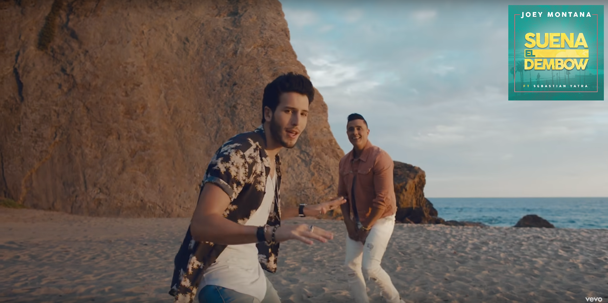
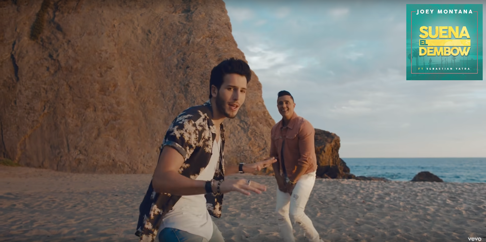

Expresar emociones no es una cosa que me salga naturalmente en general, ya lo sabes. Con vos es diferente y pasó tan rápido el tiempo... me acuerdo el primer dia que arreglamos para vernos y estaba cagado hasta las patas, tenía muchas ganas de que salga bien pero ni te conocía todavía asique no sabia que esperar de esa salida. También me acuerdo de al otro día tener esa duda de cómo la habías pasado, de sentirme infumable hablándote, remándola, etc. pero menos mal que lo hice, hoy estamos cumpliendo 3 años de novios. Estas dos son las canciones que más me hacen acordar a vos porque una de las primeras veces que salíamos, fuimos a comer al viejo dave y mientras te llevaba a tu casa pusiste "Date la vuelta", me sigue pareciendo muy mala pero la ponías siempre. Y "Suena el dembow" fue como la primera que coincidimos y cantamos en el auto si mal no recuerdo, por ende me hace acordar a vos cada vez que la escucho.
 

Me cuesta poner en palabras lo que me haces sentir, Te Amo cada día más, no es nada que ya no te haya dicho que me encanta tu forma de ser, cómo nos llevamos, cómo me haces reir cuando llega la hora de decir boludeces, además me gusta como soy/estoy cuando estamos juntos, la palabra que lo resume es feliz; entre muchas otras cosas. Básicamente me haces bien, y quiero hacertelo saber y recordarte cada día lo mucho que me generas y lo que significas para mi. Tenes la facilidad de sacarme una sonrisa en cualquier momento y estar con vos ya de por si me encanta. Sos el planazo que quiero tener siempre, porque aunque hagamos la nada misma o veamos una serie, lo que sea, tenerte al lado me pone feliz; ojala nos esperen muchas cosas por vivir, llenarnos de experiencias, viajes, lo que sea pero siempre juntos.
Supongo que te acordas cuando no tenía nada que hacer y se me ocurrió empezar esos cursos para hacer una página, el tema fué cuando los terminé, para ponerme a practicar y hacer mi primera página se me ocurrio hacerla de nosotros. No sabía el sentido que iba a darle, te la queria dar para algo "especial" por más inservible que sea y ahí me termino de cerrar la idea de dartela para los 3 años. Espero que te guste, ojala sean muchos años más juntitos y siempre recorda lo mucho que TE AMO.